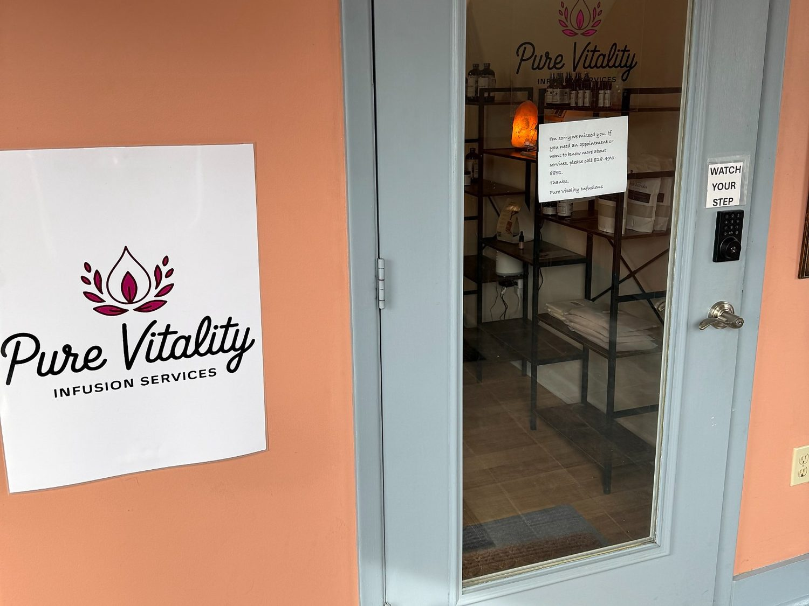

A nurse-led clinic, built on long appointments.
Pure Vitality Infusion Services is owned and operated by Chelsey Wines, RN — a registered nurse with more than a decade of clinical experience and a stubborn belief that good medicine takes time.

Why a small, nurse-led clinic in Asheville
Chelsey grew up in Western North Carolina and trained as a registered nurse in the same hospital system where most of her family had been patients. She spent the first decade of her career in critical care and infusion settings — watching firsthand what happens when a complex patient is given fifteen minutes and a checklist instead of a conversation.
Pure Vitality opened in 2026 in a small, light-filled clinic on Hendersonville Road. Every infusion is administered by a licensed RN. We employ the latest medical techniques and infusion protocols, and we keep the door open to walk-ins and same-week appointments, because waiting six weeks to feel better isn’t care.
Outside of the clinic, she’s a mom, a clogger, a slow gardener, and a relentless advocate for the kind of patient-centered care that built her career. If you’ve been told there’s nothing else to try, or you’ve been left to figure it out alone — she’d love to meet you.
“I want every person who walks in to leave feeling like someone finally listened. That’s the whole job.”
Training, licensure and partnerships
Chelsey is a licensed registered nurse in the State of North Carolina with more than ten years of critical care and infusion experience. She is RGCC certified to administer SOT IV — an advanced therapy used for chronic Lyme, chronic viral infections, and oncology support.
She works in close collaboration with Dr. Clayton Bell MD, an internationally recognised Lyme disease specialist whose patients travel from across the country for treatment. Pure Vitality is one of a small number of clinics in the region trained and equipped to deliver the specialty infusion protocols his patients require, including SOT IV, high-dose vitamin C, and chelation therapy.
In practice that means a direct referral pathway for complex Lyme cases, RGCC SOT IV administered on-site, coordinated care with a physician who knows your file, and specialty lab work and chelation carried out under physician oversight.